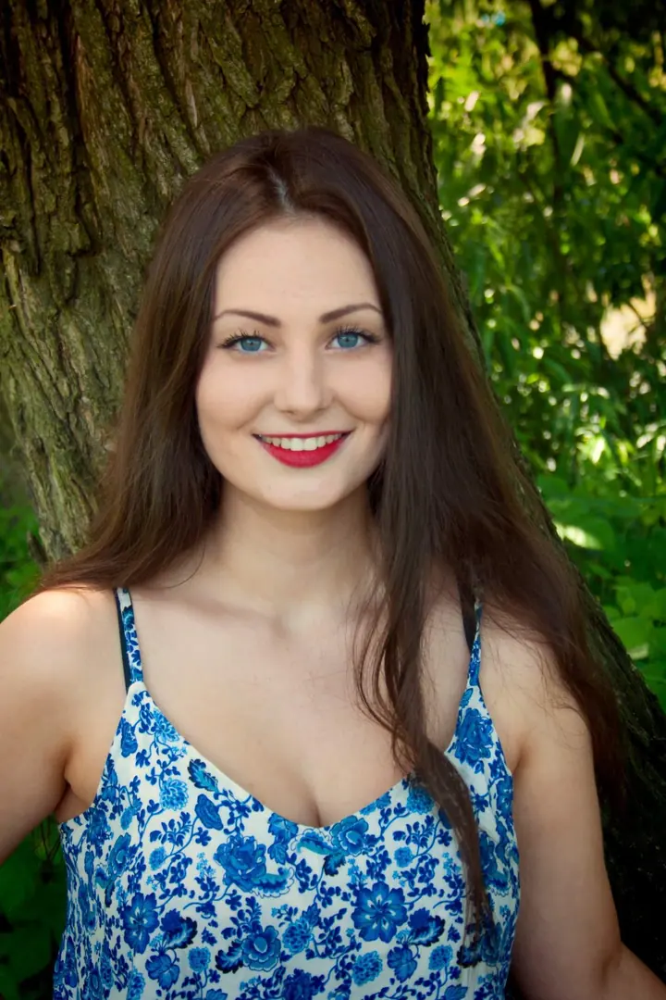
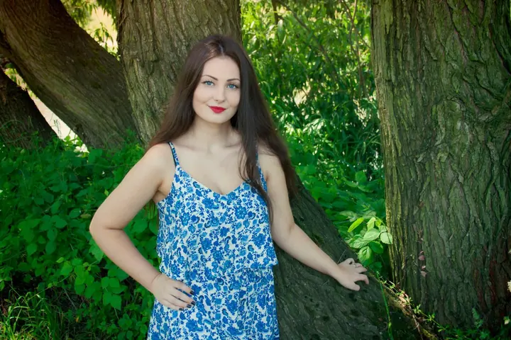

jedna
Portréty v přírodě
Fotím ženské portréty venku: u vody, v rozkvetlých polích nebo ve stínu stromů. Pořád se učím, a tak je každé focení pro mě i nová zkušenost.


Jmenuji se Zuzka a fotím portréty v Ostravě a okolí, nejčastěji venku u vody, v rozkvetlých polích nebo ve stínu stromů. Teprve začínám, a tak je u mě focení zatím zdarma za TFP.
Více o mně
Co fotím
jedna
Fotím ženské portréty venku: u vody, v rozkvetlých polích nebo ve stínu stromů. Pořád se učím, a tak je každé focení pro mě i nová zkušenost.
dvě
Všechna focení jsou zatím zdarma na principu TFP. Vy věnujete svůj čas, já fotky, a obě je pak můžeme použít.
Focení venku, u vody i v polích.


Za objektivem
Jsem z Ostravy a tenhle web slouží jako ukázka mých fotografických prací. Nechci ze sebe dělat velkou fotografku. Vím, že se mám ještě hodně co učit, a každé focení beru jako další krok.
Nejvíc mě baví portréty venku. Hladina jezera, žluté pole nebo zelený stín pod stromy dají fotce barvu i náladu a vy se v nich můžete cítit uvolněně.
Všechna focení jsou zatím zdarma na principu TFP. Pokud máte chuť se nechat vyfotit, napište mi e-mail. A když mi k fotkám pošlete konstruktivní radu nebo kritiku, budu jen ráda.
Zuzu
Pošlete mi e-mail s tím, o jaké focení máte zájem a kdy byste měli čas.
Společně vybereme místo v Ostravě nebo okolí a probereme oblečení i náladu fotek.
Sejdeme se na smluveném místě a v klidu fotíme. Pózy spolu doladíme přímo na místě.
Vyberu ty nejpovedenější, upravím je a pošlu vám je. Fotky pak můžeme použít obě.
Portfolio
Otázky
Nic. Všechna focení jsou zatím zdarma na principu TFP.
Time for prints: vy věnujete focení svůj čas, já vám za to dám upravené fotky. Obě je pak můžeme použít, třeba do portfolia.
Jsem z Ostravy, takže hlavně v Ostravě a okolí. Nejčastěji venku, u vody, v polích nebo mezi stromy.
Nemusíte. Na místě vám poradím a společně najdeme pózy, ve kterých se budete cítit přirozeně.

Napište pár vět o tom, co si představujete. zuzu.petrikova@seznam.cz